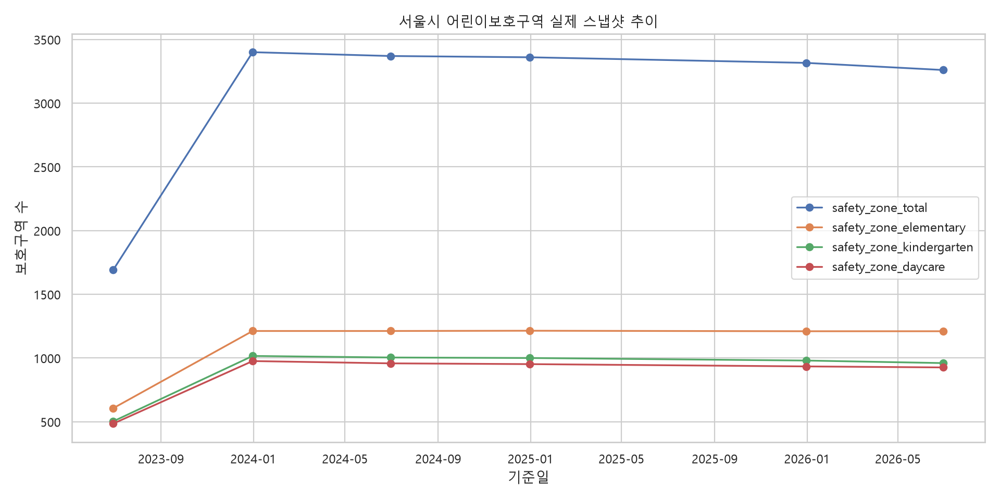
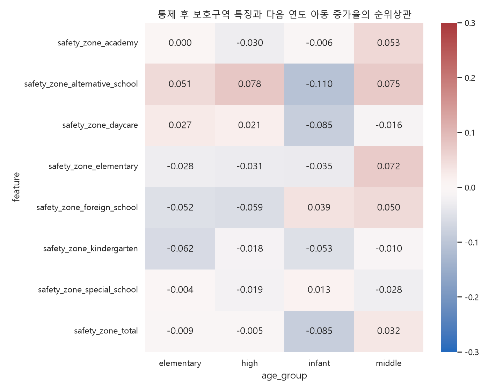

생성시각: 2026-10-26T09:46:34
2023·2024·2025년 12월 실제 스냅샷 중 미래 인구가 존재하는 2023·2024년을 분석했습니다. 설명변수는 연도 t의 보호구역 유형별 개수이고, 목표는 t+1년의 영유아·초등·중등·고등 연령대 인구 증가율입니다.
| snapshot_date | safety_zone_total |
|---|---|
| 2023-06-30 | 1692 |
| 2023-12-31 | 3400 |
| 2024-06-30 | 3370 |
| 2024-12-31 | 3360 |
| 2025-12-31 | 3316 |
| 2026-06-30 | 3260 |

결합 행: 844개, 행정동: 422개, 설명 연도: 2023, 2024

아래는 연령대별 절대 부분상관 상위 3개입니다. 방향과 크기가 연도별·모델별로 안정적인지 추가 확인해야 합니다.
| age_group | feature | n | pearson_r | pearson_p | spearman_rho | spearman_p | partial_spearman_rho | partial_n | abs_partial_spearman |
|---|---|---|---|---|---|---|---|---|---|
| elementary | safety_zone_kindergarten | 844 | 0.0250 | 0.4686 | -0.0560 | 0.1040 | -0.0618 | 844 | 0.0618 |
| elementary | safety_zone_foreign_school | 844 | -0.0053 | 0.8780 | -0.0293 | 0.3948 | -0.0517 | 844 | 0.0517 |
| elementary | safety_zone_alternative_school | 844 | -0.0014 | 0.9686 | 0.0646 | 0.0606 | 0.0508 | 844 | 0.0508 |
| high | safety_zone_alternative_school | 844 | -0.0007 | 0.9848 | 0.0755 | 0.0283 | 0.0784 | 844 | 0.0784 |
| high | safety_zone_foreign_school | 844 | -0.0058 | 0.8660 | -0.0306 | 0.3747 | -0.0585 | 844 | 0.0585 |
| high | safety_zone_elementary | 844 | -0.0154 | 0.6560 | -0.0126 | 0.7147 | -0.0307 | 844 | 0.0307 |
| infant | safety_zone_alternative_school | 843 | -0.0423 | 0.2198 | -0.0826 | 0.0165 | -0.1099 | 843 | 0.1099 |
| infant | safety_zone_daycare | 843 | 0.0333 | 0.3347 | -0.0414 | 0.2298 | -0.0851 | 843 | 0.0851 |
| infant | safety_zone_total | 843 | -0.0230 | 0.5043 | -0.0471 | 0.1721 | -0.0848 | 843 | 0.0848 |
| middle | safety_zone_alternative_school | 844 | -0.0013 | 0.9703 | 0.0720 | 0.0365 | 0.0750 | 844 | 0.0750 |
| middle | safety_zone_elementary | 844 | -0.0149 | 0.6658 | 0.0609 | 0.0768 | 0.0718 | 844 | 0.0718 |
| middle | safety_zone_academy | 844 | -0.0051 | 0.8816 | 0.0685 | 0.0468 | 0.0529 | 844 | 0.0529 |
모델 성능과 선정 근거는 학습 스크립트가 생성하는 별도 report.html에서 확인합니다.